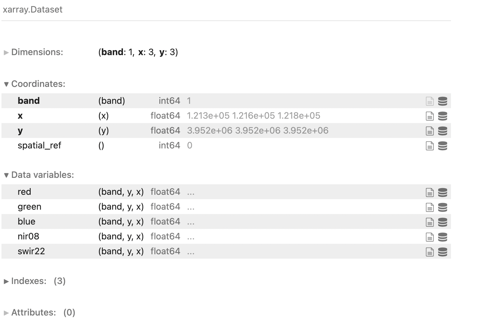
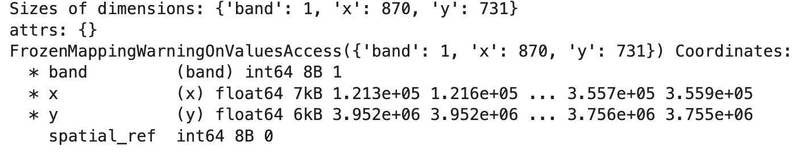
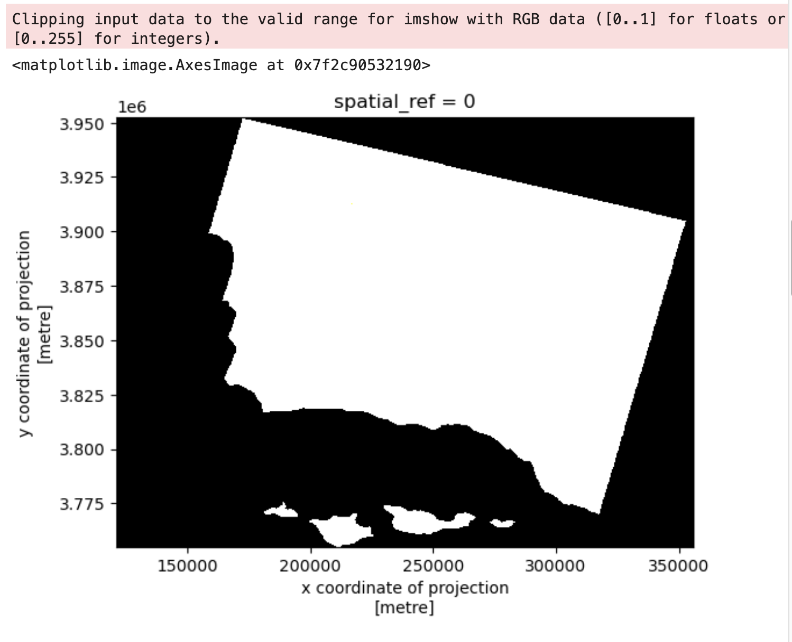
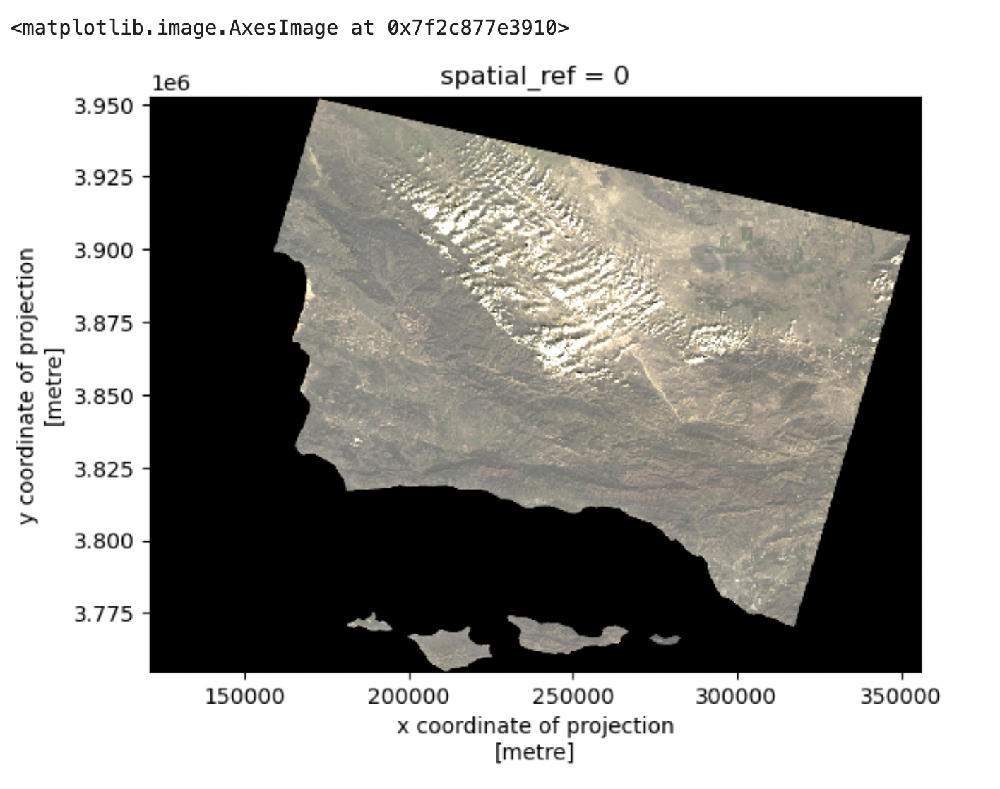
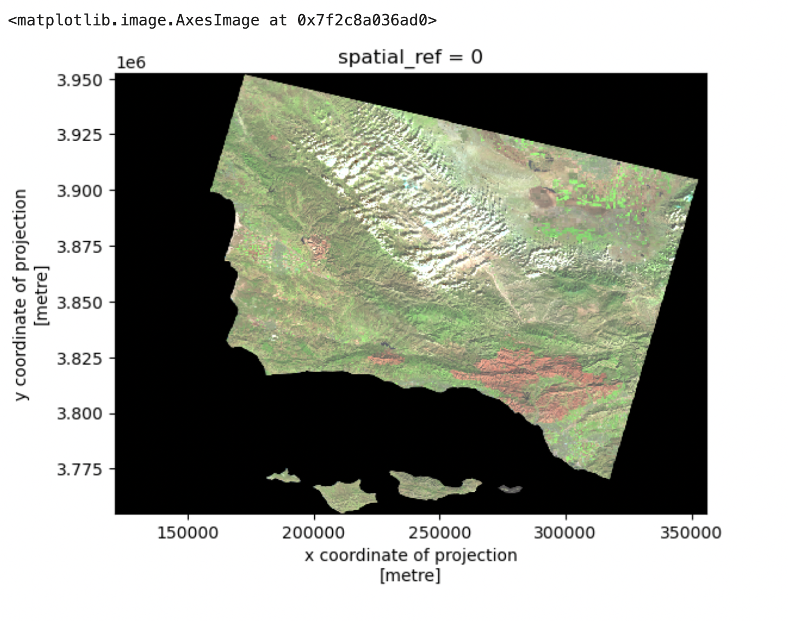
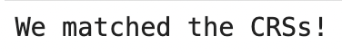
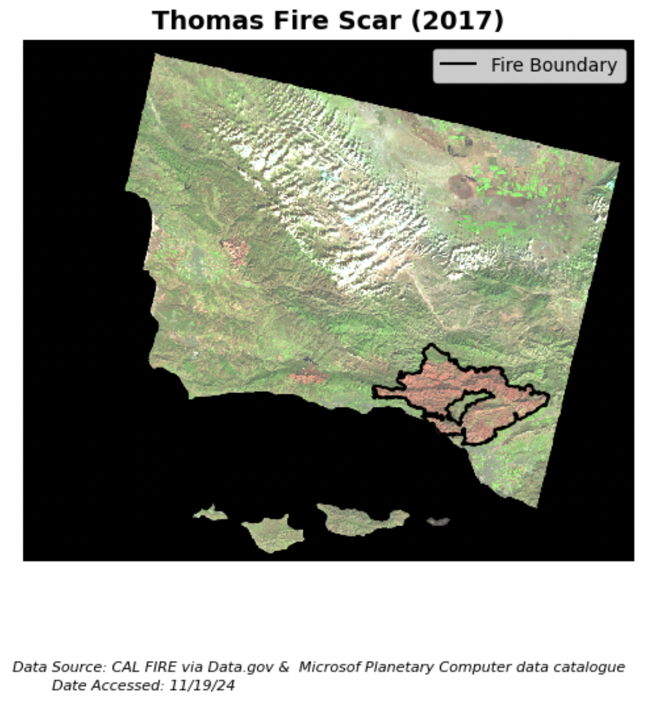

About
The Thomas Fire burned over 280,000 acres (about 440 square miles) across Ventura and Santa Barbara counties in December 2017, securing it as the largest wildfire in modern California history at the time. The main catalyst for the fire’s rapid spread were unseasonably strong Santa Ana winds that brought warm air and low humidity. In the end, 1,063 structures were lost, over 104,607 residents were forced to leave their homes, and damages totaled over $2.2 billion. Lasting environmental effects of the fire included poor air quality (Assignment 2?!) and mudflows during the successive rainy season as a result of the burned vegetation1.
This analysis uses imagery taken by Landsat 8 on January 16, 2018 to highlight the burn scar left by the Thomas Fire after it was considered fully contained (January 12, 2018). By assigning infrared bands to visible colors (short wave infrared to red, near infrared to green, and red to blue), we can easily distinguish the burn scar from the surrounding vegetation. This is because bare earth/dead vegetation reflects swir (short wave infrared), appearing red, and healthy vegetation reflects nir (near infrared), appearing green2.
This analysis was part of EDS 220: Working with Environmental Datasets - Homework Assignment 4 3.
Highlights
This task explores assigning infrared bands to visible colors to obtain false color imagery.
Necessary steps include cleaning rasters and filtering geo-dataframes for the desired information.
It is essential to match Coordinate Reference Systems (CRSs) of shapefiles and images to obtain the final plot.
Thomas Fire GitHub Repository
├── data
│ ├── thomas_fire.cpg
│ ├── thoams_fire.dbf
│ ├── thomas_fire.prj
│ ├── thomas_fire.shp
│ └── thomas_fire.shx
├── .gitignore
├── README.md
├── hwk4-task2-false-color-HOYT.ipynb
└── hwk4-task2-fire-perimeter-HOYT.ipynbDataset Descriptions
Landsat Data:
A cleaned, simplified collection of bands (red, green, blue, nir, swir) from Landsat Collection 2 Level-2 (collected by Landsat 8 satellite).
Fire Perimeters Data:
Open-source data containing information from the spatial distrubtion of past fires in California published by the State of California and downloaded as a shapefile.
Analysis
From hwk4-task2-fire-perimeter-HOYT.ipynb
First, import all necessary packages.
import os
import pandas as pd
import geopandas as gpd
import xarray as xrThen, import the fire perimeters dataset and filter for the 2017 Thomas Fire. Save the filtered dataset in a format of your choice (I chose to save it as a shapefile due to its versatility and familiarity).
Note: I saved the fire perimeters dataset in my data/ folder in a separate no_push/ folder that was added to my .gitignore due to the size of the file.
# Create filepath
fp = os.path.join("data", "no_push", "California_Fire_Perimeters_(all).shp")
# Read in data
fire_perimeter = gpd.read_file(fp)
# Lower column names
fire_perimeter.rename(columns=str.lower, inplace=True)
# Select Thomas Fire boundary
thomas_fire = fire_perimeter.loc[(fire_perimeter['fire_name'] == "THOMAS") &
(fire_perimeter['year_']== 2017)]
# Save Thomas Fire boundary
thomas_fire.to_file(os.path.join("data", "thomas_fire.shp"))From hwk4-task2-false-color-HOYT.ipynb
First, import all necessary packages.
import os
import pandas as pd
import matplotlib.pyplot as plt
import geopandas as gpd
import xarray as xr
import rioxarray as rioxr
import numpy as npThen, import the landsat data which has been pre-processed and saved on the server at the given filepath.
# Import data
fp = os.path.join("/courses/EDS220/data/hwk4_landsat_data", "landsat8-2018-01-26-sb-simplified.nc")
landsat = rioxr.open_rasterio(fp)
landsat
The xarray has a dimension band of size one. This dimension is not necessary, so we will use the squeeze() and drop_vars() functions to remove it.
# Drop the 'band' dimension
landsat = landsat.squeeze().drop_vars('band')
# Confirm 'band' was dropped
print(landsat.dims, landsat.coords)
The next step is to plot a true color image. To do this, we must select the ‘red’, ‘green’, and ‘blue’ variables in that order to assign to the ‘red’, ‘green’, and ‘blue’ bands.
# Select 'red', 'green', and 'blue' variables and plot
landsat[['red', 'green', 'blue']].to_array().plot.imshow()Since there are outlier values in these variables, the initial plot is black and white and gives us warning message:

In order to de-weight the outliers and properly scale each band, we will set the robust parameter to True in .imshow().
# Adjust the scale for a true color plot
landsat[['red', 'green', 'blue']].to_array().plot.imshow(robust = True)This produces our true color image:

To create our false color image, we must assign the short wave infrared variable (‘swir22’) to the ‘red’ band, the near infrared variable (‘nir08’) to the ‘green’ band, and ‘red’ variable to the ‘blue’ band.
# Create a false color image
landsat[['swir22', 'nir08', 'red']].to_array().plot.imshow(robust = True)This produces our false color image:

Finally, we can create our burn scar map. We must import our saved Thomas Fire perimeter shapefile and make sure the CRSs match before we can plot.
# Import Thomas Fire shapefile
thomas_fire = gpd.read_file(os.path.join("data", "thomas_fire.shp"))
# Make sure CRSs match
if thomas_fire.crs == landsat.rio.crs:
print("CRSs match!")
else:
landsat = landsat.rio.reproject(thomas_fire.crs)
assert landsat.rio.crs == thomas_fire.crs
print("We matched the CRSs!")
To map the data,
# Map the false color image with the fire perimeter
landsat_aspect_ratio = landsat.rio.width/landsat.rio.height
fig, ax = plt.subplots(figsize = (6, 6*landsat_aspect_ratio))
ax.axis("off")
landsat[['swir22', 'nir08', 'red']].to_array().plot.imshow(ax = ax,
robust = True)
thomas_fire.boundary.plot(ax = ax,
color = "black")
ax.legend(labels = ["Fire Boundary"])
fig.text(0.5, 0.1,
'Data Source: CAL FIRE via Data.gov & Microsof Planetary Computer data catalogue',
ha='center', va='center', fontsize=8, color='black', fontstyle='italic')
fig.text(0.395, 0.08,
'Date Accessed: 11/19/24',
ha='right', va='center', fontsize=8, color='black', fontstyle='italic')
ax.set_title("Thomas Fire Scar (2017)", fontsize=14, fontweight='bold')
plt.show()
This figure shows the burn scar from the Thomas Fire in 2017. By assigning infrared bands to visible colors (short wave infrared to red, near infrared to green, and red to blue), we can easily distinguish the burn scar from the surrounding vegetation. This is because bare earth reflects swir (short wave infrared), appearing red, and healthy vegetation reflects nir (near infrared), appearing green.
References
Landsat data:
Microsoft Open Source, Matt McFarland, Rob Emanuele, Dan Morris, & Tom Augspurger. (2022). microsoft/PlanetaryComputer: October 2022 (2022.10.28). Zenodo. https://doi.org/10.5281/zenodo.7261897 Accessed: November 19, 2024
Fire perimeter data:
State of California, Kimberly Wallin. (2024). CAL FIRE: May 2024 (2024.05.14). https://catalog.data.gov/dataset/california-fire-perimeters-all-b3436 Accessed: November 19, 2024